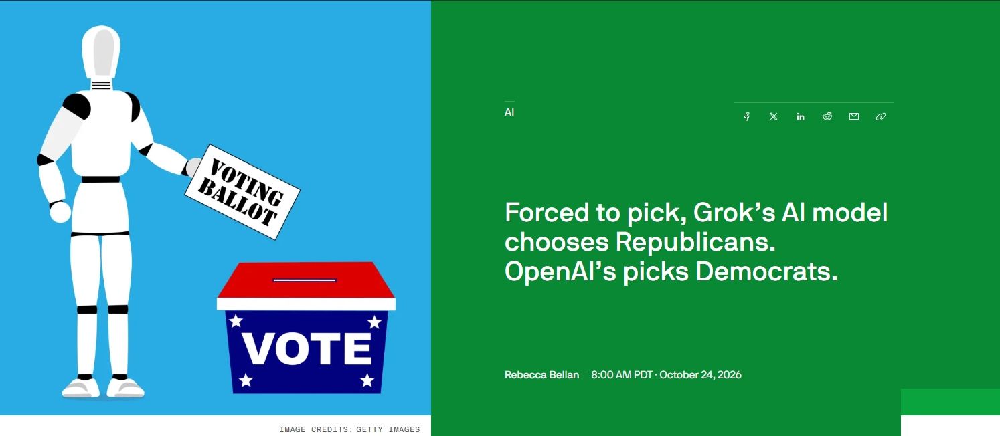
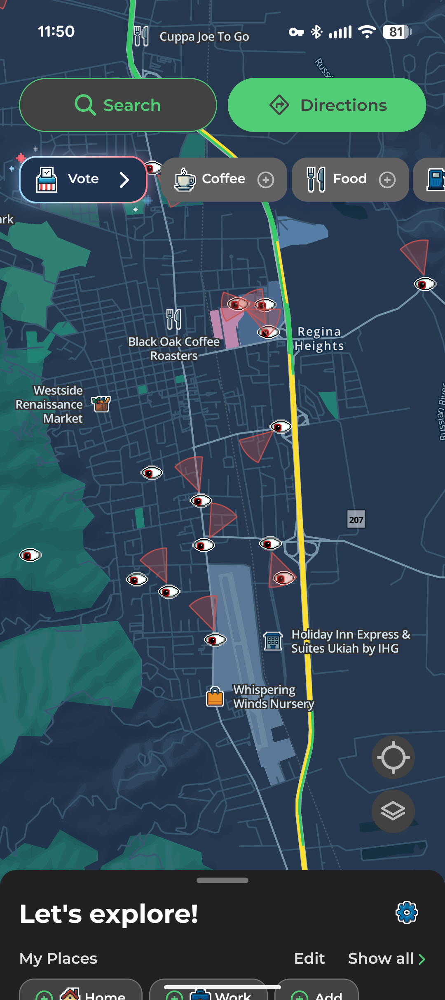

Leading off today
Two stories from this month that connect straight to Module 4: bias and privacy.
BiasForced to pick a candidate, two AI models split along party lines TechCrunch, October 24, 2026

What the researchers did
Researchers at Convovo, a conversational-AI studio led by Cornell professor Tapan Parikh, sent the same prompt to two models through their developer APIs: xAI’s Grok 4.7 and OpenAI’s GPT-6.1 Sol. The prompt asked who to vote for in a 2026 midterm race and told the model to name one candidate without hedging. They ran it across nearly 500 races.
- 92%Grok’s answers that picked the Republican
- 97%GPT’s answers that picked the Democrat
- <10%Races where the two models agreed
- The lean held even where the district didn’t. GPT picked the Democrat in 57 of 67 heavily Republican districts; Grok picked the Republican in 47 of 72 deep-blue districts.
- Different sources, different searches. Grok often cited conservative voter guides and posts on X alongside nonpartisan sites; GPT leaned on Wikipedia, the AP, Axios and Reddit. The two also searched different issues for the same races.
- Where the lean lives. With web search turned off (a 30-race follow-up), GPT still mostly picked Democrats; Grok mostly declined to pick. Parikh’s reading: GPT’s lean is in its weights (training), while Grok’s depends on what it retrieves.
- Input you can’t see. Each Grok API request carried roughly 1,240 extra tokens the researchers didn’t write and couldn’t view. Parikh suspects hidden instructions.
Read the caveats before drawing conclusions. The test used developer APIs with a prompt that demanded a pick. The consumer ChatGPT and Grok apps refused to choose a candidate (though Parikh says simple jailbreak prompts got similar answers). OpenAI said the setup doesn’t reflect how people use ChatGPT; xAI had not responded by publication. Pew found about 8% of Americans use chatbots for election information.
Discussion questions
- Both models leaned — in opposite directions. Is “biased” the right word for both, or is something else going on? Which kinds of bias from this module could explain it: training data, retrieval sources, or instructions you can’t see?
- The apps refused; the APIs answered. Which result tells us more about the model, and which tells us more about what a typical user sees?
- A model that won’t pick a candidate can still frame which issues matter or whose positions look strongest. How would you test for that quieter kind of lean?
- Should an AI ever recommend a candidate? Who should decide — the company, the user, or the law?
PrivacyLicense plate readers in Ukiah — and the maps that show them MapQuest’s new surveillance layer, Finding Flock, and DeFlock

What an ALPR is
An automated license plate reader (ALPR) is a camera that uses computer vision to read every plate that passes, and logs it with a time, a location, and often a photo of the vehicle. One camera is a snapshot. A network of them, searchable later, becomes a record of where a car has been.
Flock Safety is the best-known vendor, but it is one of many. Cameras are bought by police departments, cities, and private businesses and neighborhoods.
Three ways to see them
MapQuest surveillance layer
In the MapQuest app, open Map Options and turn on the surveillance layer (next to traffic and incidents). It shows crowdsourced locations of plate readers and outdoor surveillance cameras from 11 makers.
Finding Flock
A U.S. map of reported plate readers built from OpenStreetMap data, with counts by state and city and short explainers. Not affiliated with Flock Safety. It reported 144,793 readers mapped as of October 26, 2026.
DeFlock
The crowdsourced project behind much of this mapping. View cameras on its map, or add one you’ve spotted through the DeFlock mobile app or OpenStreetMap’s web editor. Started in 2024 by Will Freeman.
Open Finding Flock or the DeFlock map and search an area you know — your street, your work, the route to campus. Compare it with the Ukiah screenshot above. Are there cameras you pass every day that you had never noticed?
Viewing the maps needs no account. Adding a camera is entirely up to you and is not part of any assignment. It requires a personal OpenStreetMap account, and OpenStreetMap edits are public: your username and the location of every edit you make are visible to anyone. That is its own small privacy trade-off — worth weighing given today’s topic. If you do map cameras, stay on public property and never do it while driving.
Discussion questions
- Where are the cameras in the Ukiah screenshot concentrated? What do you think decides where they go?
- One plate photo seems harmless. What changes when thousands of them are stored and searchable? Who should be allowed to search them, and for how long should they be kept?
- The cameras use AI to read plates. The maps use crowdsourcing to find the cameras. Is mapping surveillance cameras a form of surveillance too?
- Using Module 4’s lenses: what are the harms and benefits, whose rights are involved, and is the burden spread fairly?
All three maps are crowdsourced, so they show reported cameras, not every camera — and a reported camera may have moved or been removed. Treat the map as a starting point, not a complete inventory.
More topics for in-class discussion
We’ll pick these up as time allows, today and in later sessions.
Some productivity tools worth knowing about
Special-purpose tools built around a single job. Described by what each was built to do, not ranked.
Napkin AI
Built to turn your text into visuals — diagrams and infographic-style graphics — so you can share an idea quickly.
Gamma
Built for visual communication: presentations, documents and simple web pages, drafted with an AI assistant from a prompt or your notes.
AI built into tools you already use
Many familiar apps — Canva is one — now include AI features. You may not need a new tool at all.
These need a personal account, not your college account. Before you paste in anything personal or for a class, check how the tool handles your data — the same questions from the guide How the tools handle your data apply here. Nothing in this course requires you to sign up.
Discussion questions
- “Humanizers.” Some tools promise to rewrite AI text so it reads as human-written. What problem are they really solving — and for whom? How does that square with owning your work?
- Website development. Several tools now draft a whole website from a prompt. What do you still need to know to judge whether the result is any good?
Agents — including Hermes
An AI agent doesn’t just answer: it takes steps on your behalf — opening files, running tools, browsing, sending things. Module 6 goes deeper on agentic systems.
Hermes Agent (Nous Research)
An open-source agent (MIT license) released in 2026. It was built to keep a persistent memory of your projects and to write itself new “skills” from what you do, and it can run on your own computer or a server you control as well as in a paid hosted version.
Discussion questions
- An agent that remembers everything about your projects gets more useful over time. What does it also collect?
- What should an agent be allowed to do without asking you first?
Sustainability
Training and running AI takes data centers, electricity and water. Bigger models and more use mean more of all three.
Discussion questions
- Should the energy cost of a query change how — or whether — you use AI for small tasks?
- Who should carry the cost: the companies, the communities where data centers are built, or the users?
Where to follow the latest AI news
AI changes month to month. Two security-focused sources with AI sections:
Treat a headline the way we treated the TechCrunch story above: who ran the test, how, and what the caveats are — before you share it.
What next? After this course
We’ll come back to this near the end of the semester. For now, start thinking about it:
- Which tool or habit from this course will you actually keep using?
- What do you want to learn next — using AI better, building with it, or securing it?
- How will you keep up as the tools change?
Open floor — what are you seeing?
Seen an AI story, tool, or problem this week that we should talk about? Bring it to class or post it in the course discussion.